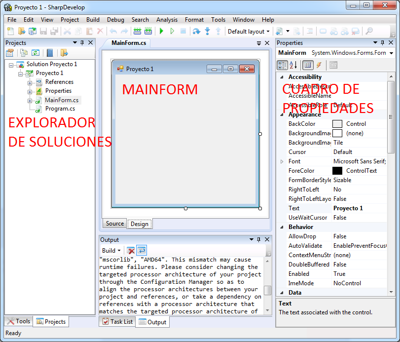
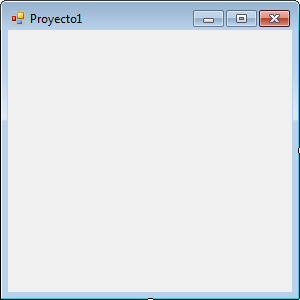

Instalación
SharpDevelop es una distribución libre para programar sobre la plataforma .Net con el lenguaje C#.
SharpDevelop requiere .Net Framework 4.5.1
http://www.microsoft.com/en-us/download/details.aspx?id=40779
Se puede obtener el instalador de SharpDevelop en el siguiente enlace:
http://www.icsharpcode.net/opensource/sd/download/GetFile.aspx?What=Setup&Release=Zimnitz
Primer proyecto
Una vez instalado vamos a crear el primer proyecto en C#.
Al ejecutar C# debemos seleccionar el tipo de proyecto Windows Application y darle un nombre.
La ruta predeterminada donde se guardará el proyecto es la carpeta de documentos del sistema:
DocumentosàSharpDevelop Projects

Ahora vamos a la pestaña “Design” para comenzar a configurar la interfaz visual del proyecto.
Identiquemos las herramientas del entorno:

Explorador de soluciones: Permite explorar los archivos del proyecto abierto e integrar proyectos nuevos y preexistentes. Si está oculto se muestra haciendo click en el menú ViewàProjects

Cuadro de propiedades: Esta herramienta nos permite configurar las características de los controles utilizados en el proyecto. Si está oculto se muestra haciendo click en el menú ViewàProperties
|
Barra de herramientas: Aquí encontraremos los controles que es posible agregar a nuestro proyecto. Si está oculto se muestra haciendo click en el menú ViewàTools |
|
|
Controles y propiedades
 |
Cuando se crea el proyecto, éste añade un control predeterminado, que es la propia ventana (MainForm) al cual añadiremos los demás controles que requeriremos para poner en funcionamiento nuestro programa. MainForm en sí es un objeto con el cual podemos interactuar, recordemos que la interfaz visual es lo que el usuario del programa verá cuando éste se ejecuta. |
Propiedades
Son las características que identifican un objeto.
Algunas de ellas son:
En la barra de herramientas encontraremos los controles que es posible agregar a nuestro proyecto. También se pueden agregar y agrupar controles por categorías.
Por ejemplo, podemos cambiar la propiedad Backcolor de la ventana a nuestro gusto:
Algunas propiedades se usan más frecuentemente que otras.
Para cambiar el texto de una etiqueta: Text
Para cambiar el color del texto: Fore Color
Para cambiar el tipo de texto: Font
Para ocultar/mostrar un objeto: Visibility
Para deshabilitar/habilitar un control: Enabled
Nota: Las propiedades con las que se configure cada control en el diseño serán con las que inicie cuando el programa sea ejecutado.
Control Button
Este control se programa para ejecutar una o varias acciones como reacción a un evento, por ejemplo, que se haga click sobre el botón.
Control Label (Etiqueta)
Tiene como propósito mostrar información (Propiedad Text)